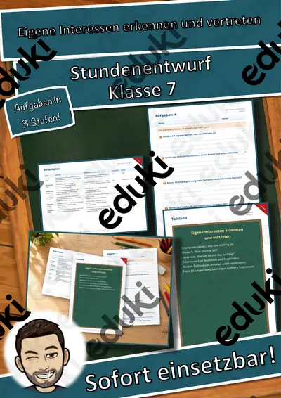
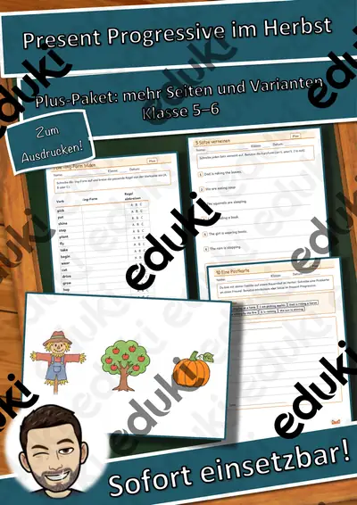

04-23 Tag der englischen Sprache
Welt-Tag der englischen Sprache
Der Welt-Tag der englischen Sprache wird jedes Jahr am 23. April gefeiert. Dieses Material hilft dabei, die Bedeutung der englischen Sprache als Weltsprache zu verstehen. Die Lernenden erfahren, warum dieser Tag gewählt wurde und welche Rolle Englisch in der Welt spielt.
Lernziele
Verständnis für die Bedeutung der englischen Sprache entwickeln.
Wissen über den Ursprung des Welt-Tags der englischen Sprache erlangen.
Die Verbreitung der englischen Sprache weltweit erkennen.
Interesse an kulturellen Veranstaltungen und der englischen Literatur wecken.
Aufgaben
Die Lernenden lesen den Text aufmerksam und beantworten anschließend die Fragen:
Wann wird der Tag gefeiert?
Warum wurde dieser Tag gewählt?
Wie viele Menschen sprechen Englisch?
Was betonen die Vereinten Nationen?
Welche Veranstaltungen gibt es?
Lösungen
Die Lösungen zu den Aufgaben sind ebenfalls enthalten, um eine einfache Überprüfung zu ermöglichen.
Nutzungsbedingungen
Das Material darf nur im eigenen Unterricht verwendet werden. Eine Weitergabe an Dritte ist nicht erlaubt.
Feedback
Wenn dir das Material gefällt, freue ich mich über dein Feedback! Folge mir auch auf Instagram, um keine Aktionen zu verpassen.
Ähnliche Materialien

Englische Sprache Lückentext mit Wortspeicher Hörverstehen und Suchsel

Englischer Bürgerkrieg Lückentext mit Wortspeicher Hörverstehen und Suchsel

Erlangen Lückentext mit Wortspeicher Hörverstehen und Suchsel

Eigene Interessen erkennen und vertreten – Stundenentwurf (Klasse 7)

Lesespur: The Apple Cellar – Lesespurgeschichte mit Rätseln auf Englisch (Klasse 6)

Englisch-Werkstatt: Present Progressive im Herbst – kostenlos, Klasse 5–6

Englisch-Werkstatt: Present Progressive im Herbst – Plus-Paket, Klasse 5–6